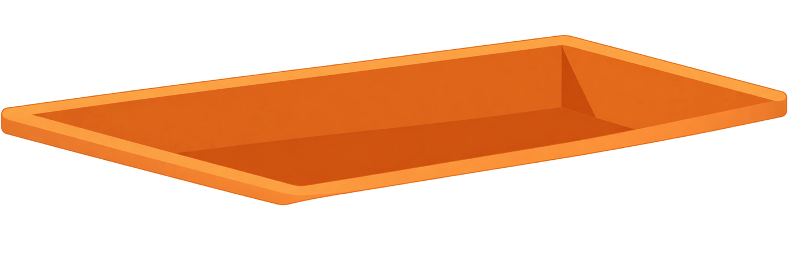
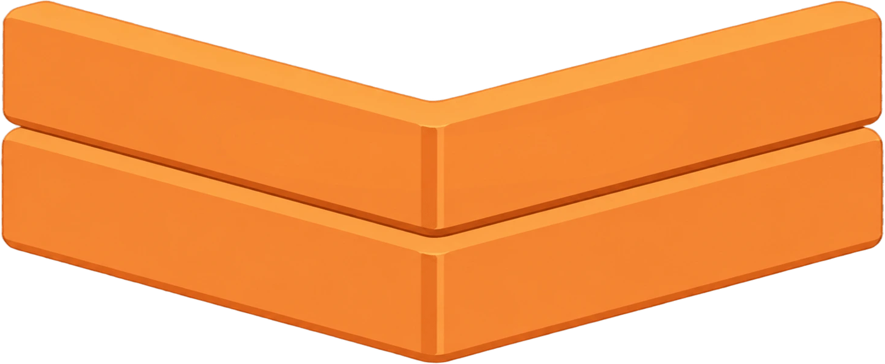
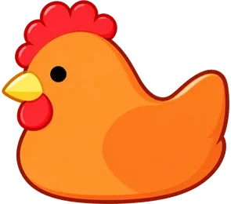
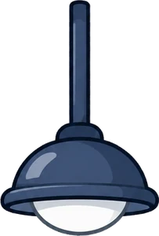
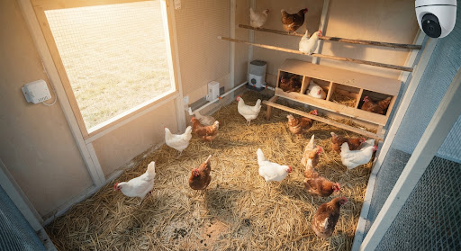

Sensor
Suhu & kelembapan
Pembacaan udara kandang dengan penanda otomatis saat keluar dari ambang yang kamu atur.


Ambil telurKlik telurnya
Prototipe front-end · data simulasi
Enam hal yang menentukan kesehatan ayam petelur — suhu, kelembapan, pakan, air, cahaya, dan ketenangan — semuanya terbaca dan bisa kamu ubah dari satu layar.
Berjalan di browser · tanpa backend





KandangNyalakan lampu / musik
Tiga aktuator di bawah memengaruhi suhu dan kelembapan kandang. Angka dan grafik ikut bergerak — persis seperti di panel pengguna.
Setiap bagian kandang punya sensor atau aktuatornya sendiri — semuanya bermuara di satu layar.
Pembacaan udara kandang dengan penanda otomatis saat keluar dari ambang yang kamu atur.
Status tempat pakan dan levelnya, plus notifikasi saat menipis.
Buka atau tutup aliran air langsung dari ponsel, tanpa masuk kandang.
Mode tetap merah + warm white, dengan jadwal nyala dan padam.
Putar musik untuk menenangkan ayam, lengkap dengan pengatur volume.
Pratinjau area kandang langsung dari dasbor. Stream masih dalam pengembangan.
ESP menempel di kandang dan mengirim suhu, kelembapan, serta level pakan secara berkala.
Setiap pembacaan dibandingkan dengan ambang yang kamu tentukan. Keluar batas, langsung jadi alert.
Buka valve, nyalakan lampu, atau putar musik — satu ketukan, tanpa masuk kandang.
Angka besar, warna status yang jelas, dan navigasi bawah untuk ibu jari. Tidak perlu zoom, tidak perlu scroll dua kali.

Kandang yang dipantau manual kehilangan detail. Di sini semua tercatat, dan bisa dibuka dari mana saja.
Data hilang begitu buku catatan selesai dipakai.
Belum. Ini prototipe front-end: seluruh angka di halaman ini adalah simulasi, dan data akun disimpan di penyimpanan lokal browser, bukan server.
Pembacaan ditandai, status berubah warna, dan sebuah alert muncul di halaman Notifikasi. Kamu bisa mengubah ambangnya kapan saja di panel Aturan.
Bisa. Setiap kandang punya perangkat, ambang, dan log sendiri. Dasbor menampilkan ringkasan seluruh kandang dalam satu layar.
Bisa. Tema mengikuti jam secara otomatis — siang, sore, malam — dan masih bisa diganti manual lewat tombol di kanan atas.
Masuk dengan akun demo, atau daftarkan akun pengguna sendiri.
Gratis · data tersimpan di browser · tanpa kartu